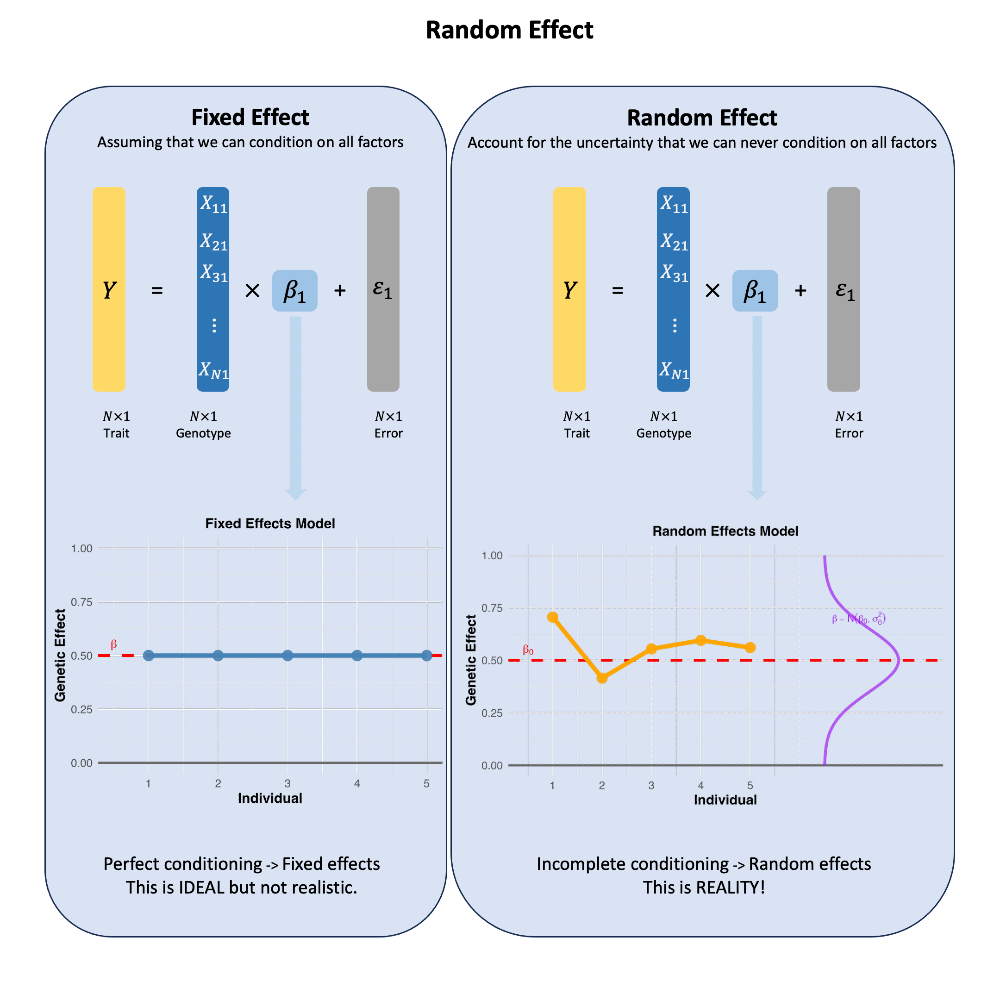

Collider#
A collider is a variable that is influenced by two other variables of interest, creating a spurious association between them when we condition on (select or control for) the collider in our analysis.
Graphical Summary#

Key Formula#
The key formula for the concept of a collider is represented in a causal diagram as:
Where:
\(C\) is the collider variable
\(X\) is one cause of the collider
\(Y\) is another cause of the collider
The arrows (→) indicate the direction of causal influence
This diagram illustrates that a collider (\(C\)) is a variable that is caused by both the exposure (\(X\)) and the outcome (\(Y\)), creating a situation where \(X\) and \(Y\) both flow into \(C\).
A collider is a variable that is influenced by two other variables in a causal pathway. When we condition on (adjust for, stratify by, or select based on) a collider, we can induce a spurious association between its causes, even if they were originally independent.
Technical Details#
Conditioning on a collider can introduce bias in the estimation of the relationship between its causes. This is often called collider bias or selection bias.
In formal causal inference terminology, conditioning on a collider creates a situation where:
Where conditioning on \(C\) creates a non-causal association between \(X\) and \(Y\). This inequality shows that the association between \(X\) and \(Y\) differs when we condition on the collider.
Key characteristics of collider bias:
Induced Association: Conditioning on a collider can create an association between variables that are causally independent
Berkson’s Paradox: A classic example of collider bias in epidemiology
Selection Bias: Often occurs when study participants are selected based on criteria affected by both exposure and outcome
M-Bias: A specific pattern in DAGs where conditioning on a collider creates a biased path
Unlike confounders which should be controlled for in analyses, colliders should not be controlled for when estimating the causal effect of interest.
Example#
This example demonstrates the concept of a collider in causal inference using genotype data from five individuals across three genetic variants.
In this setup, we analyze how the correlation between two genetic variants (Variant 1 and Variant 2) changes when we condition on a third variable—disease status (Y)—that is influenced by both variants. The disease acts as a collider because it is a common effect of these two variants. Under normal circumstances, if two variables are independent (or weakly correlated), conditioning on their common effect can induce a spurious association between them. This phenomenon is known as collider bias or selection bias, and it’s a critical concept in causal modeling that can lead to misleading conclusions if not properly accounted for.
# Clear the environment
rm(list = ls())
# Define genotypes for 5 individuals at 3 variants
# These represent actual alleles at each position
# For example, Individual 1 has genotypes: CC, CT, AT
genotypes <- c(
"CC", "CT", "AT", # Individual 1
"TT", "TT", "AA", # Individual 2
"CT", "CT", "AA", # Individual 3
"CC", "TT", "AA", # Individual 4
"CC", "CC", "TT" # Individual 5
)
# Reshape into a matrix
N <- 5 # number of individuals
M <- 3 # number of variants
geno_matrix <- matrix(genotypes, nrow = N, ncol = M, byrow = TRUE)
rownames(geno_matrix) <- paste("Individual", 1:N)
colnames(geno_matrix) <- paste("Variant", 1:M)
alt_alleles <- c("T", "C", "T")
ref_alleles <- c("C", "T", "A")
# Convert to raw genotype matrix using the additive / dominant / recessive model
Xraw_additive <- matrix(0, nrow = N, ncol = M) # dount number of non-reference alleles
rownames(Xraw_additive) <- rownames(geno_matrix)
colnames(Xraw_additive) <- colnames(geno_matrix)
for (i in 1:N) {
for (j in 1:M) {
alleles <- strsplit(geno_matrix[i, j], "")[[1]]
Xraw_additive[i, j] <- sum(alleles == alt_alleles[j])
}
}
X <- scale(Xraw_additive, center = TRUE, scale = TRUE)
# assign observed disease status for the 5 individuals
Y <- c(0, 1, 1, 0, 0)
# Analysis 1: Correlation in the FULL population (all individuals)
print("=== ANALYSIS 1: FULL POPULATION ===")
print("Correlation between Variant 1 and Variant 2 in full population:")
cor_full <- cor(X[, 1], X[, 2])
print(paste("Correlation =", round(cor_full, 3)))
[1] "=== ANALYSIS 1: FULL POPULATION ==="
[1] "Correlation between Variant 1 and Variant 2 in full population:"
[1] "Correlation = -0.468"
# Analysis 2: Correlation in DISEASED individuals only (conditioning on collider)
print("=== ANALYSIS 2: DISEASED INDIVIDUALS ONLY ===")
print("Conditioning on Disease = 1 (the collider)")
diseased_indices <- which(Y == 1)
if(length(diseased_indices) > 1) {
Variant_1_diseased <- X[diseased_indices, 1]
Variant_2_diseased <- X[diseased_indices, 2]
print(paste("Diseased individuals:", paste(diseased_indices, collapse = ", ")))
print(paste("Variant 1 values in diseased:", paste(round(Variant_1_diseased, 3), collapse = ", ")))
print(paste("Variant 2 values in diseased:", paste(round(Variant_2_diseased, 3), collapse = ", ")))
cor_diseased <- cor(Variant_1_diseased, Variant_2_diseased)
print(paste("Correlation in diseased =", round(cor_diseased, 3)))
} else {
print("Not enough diseased individuals to calculate correlation")
}
[1] "=== ANALYSIS 2: DISEASED INDIVIDUALS ONLY ==="
[1] "Conditioning on Disease = 1 (the collider)"
[1] "Diseased individuals: 2, 3"
[1] "Variant 1 values in diseased: 1.565, 0.447"
[1] "Variant 2 values in diseased: -0.956, 0.239"
[1] "Correlation in diseased = -1"
In the full population of five individuals, the correlation between Variant 1 and Variant 2 is modestly negative (correlation = -0.468), suggesting only a weak linear relationship. However, after conditioning on individuals with disease (i.e., analyzing only those with disease status = 1), the correlation becomes perfectly negative (correlation = -1). This dramatic shift illustrates the collider effect: even if two variables are weakly or not associated in the general population, conditioning on a common outcome they influence can artificially induce strong correlation. This example highlights the importance of understanding the structure of causal relationships and avoiding inappropriate conditioning on colliders during statistical analyses.